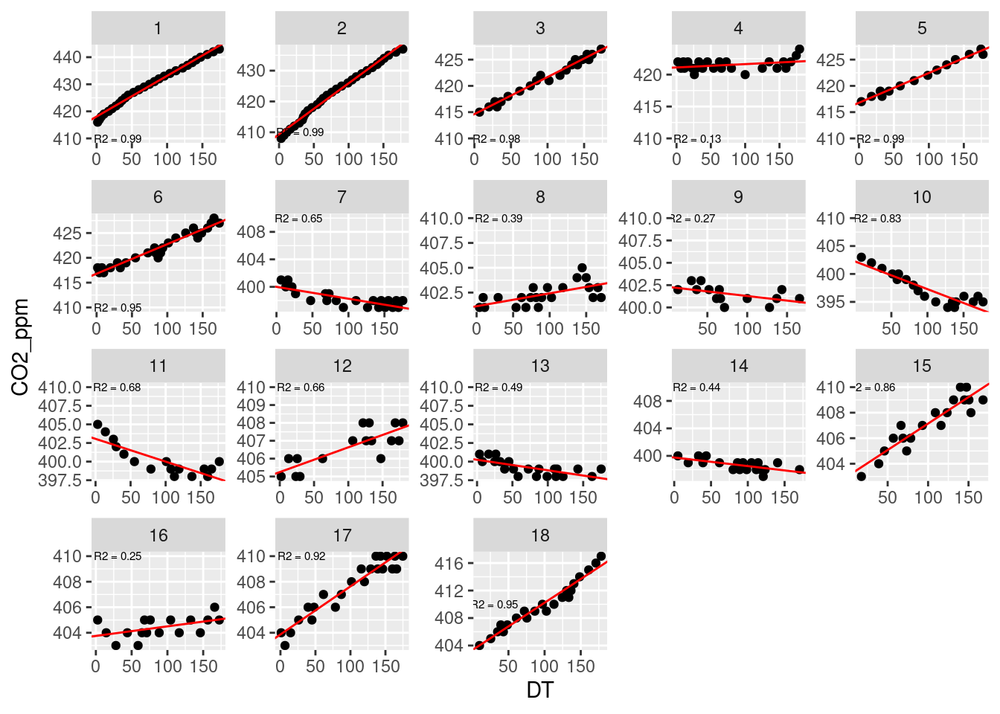

5 Ajuste lineal para obtener pendientes
Para obtener las tasas (la pendiente) usamos un ajuste lineal.
A parte del la pendiente, también nos interesa otra información como la R^2, el intervalo de confianza de la pendiente y si es significativa o no. Por ello, vamos a crear una función que ajuste una recta a nuestros datos y que además nos guarde toda la información que queremos en un objeto.
#Una función para obtener la pendiente, la R y el intervalo de confianza
fit_rates <- function(data){
lm <- lm(CO2_ppm~Seconds, data = data)
cor <- cor.test(formula = ~Seconds +CO2_ppm, data = data)
ajustes <- data.frame(R2 = as.numeric(cor$estimate^2), pvalue = cor$p.value, slope = as.numeric(lm$coefficients[2]), Intercept = as.numeric(lm$coefficients[1]), n = nrow(data), Conf_2.5 = confint(lm)[2,1], Conf_97.5 = confint(lm)[2,2])
return(ajustes)
}Una vez creada la función, podemos aplicarla a nuestros datos:
Results <- Reduced_data %>% group_by(Plot) %>% group_modify(~fit_rates(data=.x))Este es el objeto que hemos generado:
knitr::kable(Results, booktabs = T, format = "html") %>%
kableExtra::kable_styling() %>%
kableExtra::scroll_box(width = "100%", height = "500px")| Plot | R2 | pvalue | slope | Intercept | n | Conf_2.5 | Conf_97.5 |
|---|---|---|---|---|---|---|---|
| 1 | 0.9892470 | 0.0000000 | 0.1504342 | 418.0858 | 28 | 0.1441116 | 0.1567568 |
| 2 | 0.9891346 | 0.0000000 | 0.1654785 | 409.3472 | 30 | 0.1587647 | 0.1721924 |
| 3 | 0.9823930 | 0.0000000 | 0.0705262 | 414.6289 | 21 | 0.0659926 | 0.0750599 |
| 4 | 0.1330763 | 0.0729779 | 0.0052408 | 421.1234 | 25 | -0.0005290 | 0.0110105 |
| 5 | 0.9867564 | 0.0000000 | 0.0566336 | 416.7878 | 14 | 0.0525069 | 0.0607603 |
| 6 | 0.9491739 | 0.0000000 | 0.0595649 | 416.8023 | 26 | 0.0537580 | 0.0653718 |
| 7 | 0.6470085 | 0.0000064 | -0.0173003 | 399.9967 | 22 | -0.0232606 | -0.0113399 |
| 8 | 0.3929012 | 0.0017978 | 0.0129757 | 401.1265 | 22 | 0.0054524 | 0.0204990 |
| 9 | 0.2698004 | 0.0569679 | -0.0102739 | 402.3065 | 14 | -0.0209046 | 0.0003569 |
| 10 | 0.8259287 | 0.0000001 | -0.0495195 | 402.2278 | 19 | -0.0611524 | -0.0378866 |
| 11 | 0.6760721 | 0.0000927 | -0.0305813 | 403.0530 | 16 | -0.0427152 | -0.0184473 |
| 12 | 0.6588522 | 0.0001346 | 0.0138541 | 405.2474 | 16 | 0.0081397 | 0.0195686 |
| 13 | 0.4890403 | 0.0004191 | -0.0141269 | 400.2419 | 21 | -0.0210606 | -0.0071932 |
| 14 | 0.4448686 | 0.0018130 | -0.0125192 | 399.7605 | 19 | -0.0196754 | -0.0053631 |
| 15 | 0.8587568 | 0.0000000 | 0.0414192 | 403.0051 | 19 | 0.0328237 | 0.0500147 |
| 16 | 0.2483289 | 0.0417588 | 0.0074882 | 403.7539 | 17 | 0.0003184 | 0.0146580 |
| 17 | 0.9210936 | 0.0000000 | 0.0376358 | 403.8702 | 23 | 0.0326369 | 0.0426348 |
| 18 | 0.9544023 | 0.0000000 | 0.0689621 | 403.3326 | 22 | 0.0619312 | 0.0759929 |
Vamos a echar un vistazo a los ajustes que acabamos de realizar.
#Now we can have a look into the plots with the fits
ggplot(Reduced_data, aes(x = DT, y = CO2_ppm))+
geom_point()+
facet_wrap(~Plot, scales = 'free')+
geom_abline(data = Results, aes(intercept = Intercept, slope = slope), color = "red")+
geom_text(data = Results, aes(x= 30, y = 410, label = paste("R2 =", round(R2, 2))), size = 2)
Ahora vamos a guardar la información relativa a los ajsutes:
write_csv(Results, "Resultados_ajustes.csv")